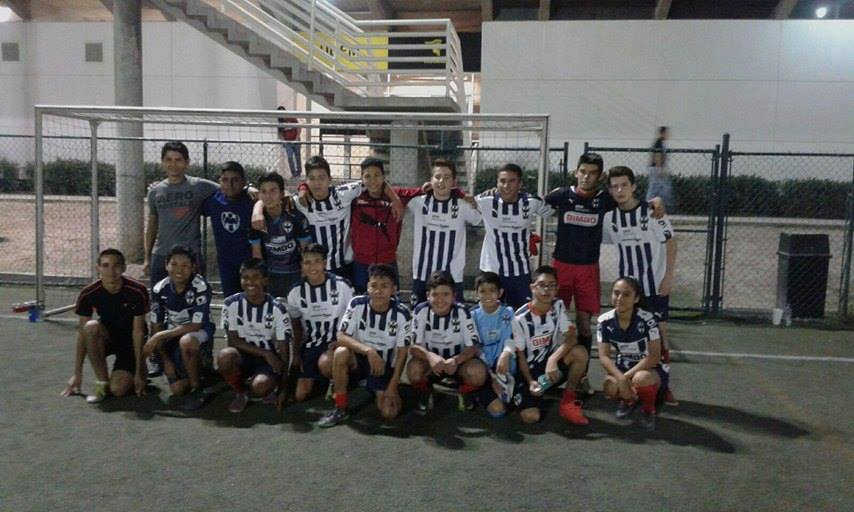
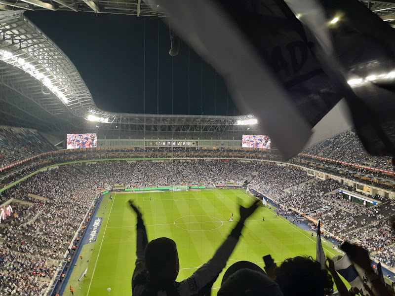

Mi pasatiempo favorito hoy realmente hoy en día no lo he practicado seguido como lo hacía cuando estaba niño cuando estaba niño jugaba cada rato me iba con mis compañeros de la colonia a jugar todas las tardes me la pasaba horas jugando, sin embargo hoy en día es muy difícil este ya practicar el fútbol realmente si quiero volver a practicarlo, ya que este anteriormente cuando estaba niño y como se muestra en esta foto estuve en la academia o en la escuela oficial de fútbol Monterrey que realmente aprendí mucho y practicarlo me gusta mucho.
Ademas me gusta mucho verlo e ir al esatdio donde mi equipo favorito son los rayados del Monterrey